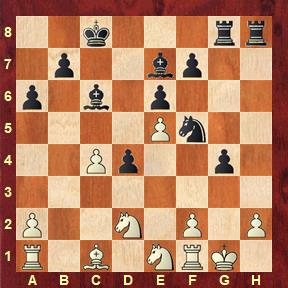

VI. Mekatar Iriondo xake txapelketako nire partidetan ikusi diren posizio batzuk ikusiko ditugu.
01 Makinak ere onena dela dio. Ze jokaldi egin nuen zuriekin?02 Partida berean jokaldi hau ere aurkitu nuen03 Eta partida bukatzeko jokaldi hau egin nuen04 Beste partida honetan jokaldi erraza egin nuen hemen05 Posizio hau aurreko partidaren analisi bat da eta hemen konbinazio oso polit bat egin daiteke06 Beste partida honetan partida bukatzen duen jokaldi bat dago. Beltzak jokatzen dute

07 Partida berean jokaldi honek partida bukatu zuen